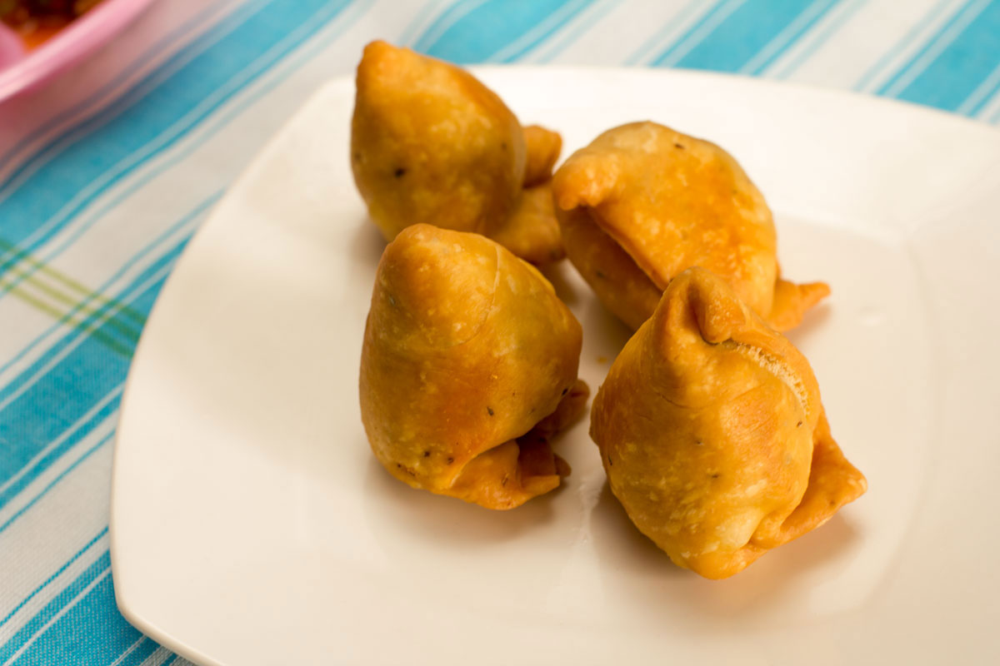

Samosa

Jalebi
A samosa is a fried South Asian pastry with a savoury
filling, including ingredients such as spiced potatoes,
onions, peas, meat, or fish. It may take different forms,
including triangular, cone, or half-moon shapes, depending
on the region.
Ingedients
- 2 cup all purpose flour
- 1 teaspoon cumin seeds
- 1 teaspoon crushed ginger
- 1 teaspoon raisins
- 5 boiled potato
- 1 teaspoon coriander powder
- 1 teaspoon red chilli powder
- 1 teaspoon kasoori methi leaves
- 1 teaspoon carom seeds
- 1/4 cup water
- 2 cup virgin olive oil
- 1/2 teaspoon coriander seeds
- 1 teaspoon green chilli
- 1 teaspoon cashews
- 1 teaspoon cumin powder
- 1/2 teaspoon garam masala powder
- salt as required
- 1 teaspoon coriander leaves
- 2 tablespoon ghee
- 1 handful raw peanuts
Steps
- Sauté cumin seeds for potato filling
- Add spices and boiled potatoes and cook for a while
- Prepare the dough for the Samosa
- Roll the dough in small puris and cut into half
- Fill the semi-circle with potato filling and deep fry
Return to top
Home page